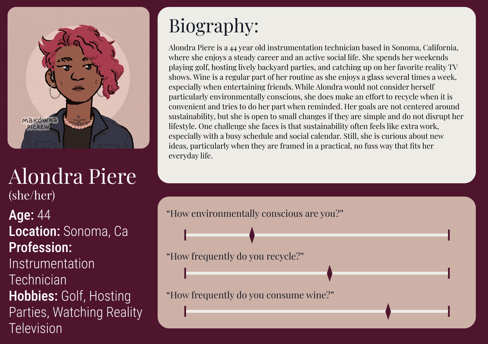
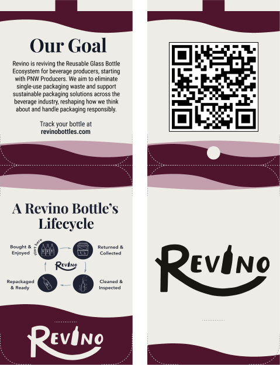

The Problem
- High Environmental Footprint & Friction in Reuse
- Unclear Messaging and Inconvenience
- App Fatigue & Fragmented Information
Over 50% of carbon emissions in winemaking stem from single-use glass bottle production, making reuse a far more sustainable alternative to traditional recycling. However, sustainable choices often demand extra effort from consumers, and without intentional design, this added burden becomes a major barrier to adoption. While users are generally supportive of eco-friendly initiatives, they are frequently deterred by vague messaging, inconvenient drop-off processes, and overall friction in the user experience.
Compounding this problem is widespread app fatigue and fragmented information architecture. User research revealed a strong disinterest in downloading standalone mobile apps just to participate in sustainability programs. Furthermore, existing return platforms often suffer from disjointed navigation, making it frustratingly difficult for customers to locate nearby return sites or track their environmental impact.
The Process
01. Problem Definition & Contextual Research
Investigated single-use glass emissions and analyzed local, national, and international circular economy models.
02. User Research & Behavioral Insights
Gathered survey data and interview responses to map consumer motivations and recycling habits using affinity diagrams.
03. Personas & Journey Mapping
Created three evidence-based personas and mapped their post-use behaviors to uncover physical and digital intervention points.
04. User Flow & Navigation Mapping
Redesigned the return map flow to allow location searches, distance filtering, and business nominations within a single view.
05. Hybrid Ideation & Physical/Digital Prototyping
Pivoted from a standalone app to a hybrid system featuring scannable bottle tags, on-shelf signage, and web wireframes.
06. Visual Storyboarding & Video Prototyping
Illustrated real-world customer interactions through storyboards and produced a narrative video showing the full user journey.
07. High-Fidelity Design & Final Deliverables
Delivered interactive Figma screens for the web landing page, a gamified return dashboard, retail signage specs, and a project poster.
Problem Definition & Contextual Research
The project began by exploring the environmental footprint of single-use glass wine packaging,
identifying that over 50% of winemaking carbon emissions originate from bottle production.
Recognizing that glass reuse offers a significantly lower footprint than traditional single-stream
recycling—which suffers from contamination and downcycling issues—the team analyzed established reuse
frameworks.
To evaluate Revino’s place in the market, a competitive analysis was conducted across local, national,
and international systems:
- Global Practices: Investigated centralized deposit-return systems, such as Norway’s Infinitum scheme which yields a 90%+ return rate through producer accountability and financial incentives.
- U.S. Market Benchmarks: Evaluated circular platforms like Loop (grocery refill logistics), OBRC / BottleDrop (Oregon's localized reverse logistics), and r.Cup (closed-loop venue cup reuse).
This context highlighted Revino’s unique value proposition: focusing specifically on the Pacific Northwest wine region to build strong local producer and consumer relationships.
User Research & Behavioral Insights
To understand consumer attitudes toward wine consumption, sustainability, and post-use behaviors, the team deployed a multi-method primary research strategy:
- Quantitative Survey: Distributed an anonymous survey targeting wine consumers ($n=45$), gathering baseline data on recycling frequency and barriers to participation.
- Qualitative Interviews: Conducted semi-structured interview sessions to dig deeper into consumer motivations, habits, and friction points.
Using affinity diagramming, the team synthesized research notes into 19 sub-categories, eventually consolidating them into seven core themes:
- Convenience: Drop-off locations must fit into existing routines (e.g., grocery trips).
- App Fatigue: Participants explicitly rejected downloading a standalone mobile app.
- Drop-off Proximity: Distance is the primary drop-off barrier.
- Information Sources: Users rely on social media, word-of-mouth, or simple web searches rather than traditional newsletters.
- Motivations: Visual environmental feedback and social normalization drive long-term participation.
- Digital Expectations: Interfaces must offer straightforward navigation and clear instructions without dense mission statements.
- Perceptions of Sustainability: Users voiced frustration with "greenwashing" and shifting ecological guilt entirely onto the individual.
Personas & Journey Mapping
To humanize research findings and guide product strategy, three primary evidence-based personas were developed:
- Barb Redmond (65): A retired travel journalist living in McMinnville, OR, who loves wine tastings but struggles with limited rural recycling options and vague marketing claims.
- James Gates (22): A college student in Seattle, WA, who is eco-conscious and mobile-oriented but constrained by time, budget, and transportation.
- Alondra Piere (44): An instrumentation technician and frequent host in Sonoma, CA, who recycles out of convenience but prioritizes simplicity over sustainability.
The team mapped each persona's User Journey across four stages: Shopping, Consideration, Use, and Post-Use. This highlighted critical intervention points—such as point-of-sale shelf messaging during Shopping and clear return callouts during Post-Use.


User Flow & Navigation Mapping
Research revealed that finding a bottle return site on Revino's existing interface involved excessive scrolling,
context switching, and multi-tab navigation.
The team mapped out a streamlined User Flow centered on map usability:
- Single-View Search: Brought location search and interactive distance sliders directly into the map viewport.
- Edge-Case Handling: When no drop-off sites are within range, the system smoothly shifts to an inline Location Nomination Form, allowing users to propose nearby businesses.
- Seamless Hand-Off: Integrated direct Google Maps directions without disrupting the main web experience.
Hybrid Ideation & Physical/Digital Prototyping
Acknowledging strong user aversion to standalone apps,
the team pivoted to a hybrid model—combining in-store retail touchpoints with a lightweight,
browser-based web application accessed via QR codes.
Iterative prototyping focused on two physical touchpoints alongside digital screens:
- Wine Bottle Tags: Tested three physical form factors (square string tags, tapered tags, and folded dual-sided tags) to evaluate visual hierarchy, legibility, and manufacturing feasibility.
- On-Shelf Signage: Built cardboard, pin, and slotted-rack prototypes for adjustable retail displays, validating that over 40% of survey respondents would engage with on-shelf cues.
- Mid-Fidelity Wireframing: Created mobile screens for the landing page, map search, and an user account area for logging returns.

Visual Storyboarding & Video Prototyping
To ensure both physical and digital components functioned cohesively in real-world environments, the team designed storyboards illustrating user interactions across key touchpoints:
- Scenario Mapping: Visualized moments such as noticing shelf signage during retail browsing, scanning a bottle tag QR code at home, and navigating to a drop-off location.
- Video Production: Scripted and filmed a prototype video tracking a hypothetical customer journey from retail purchase to web engagement, ensuring all friction points were accounted for before final UI production.
High-Fidelity Design & Final Deliverables
The design phase concluded with polished, high-fidelity UI screens in Figma alongside physical production specifications:
- Responsive QR Landing Page: Designed a clean landing page incorporating an educational "How It Works" diagram, and an embedded return site finder.
- Gamified Impact Dashboard: Built a personal user portal featuring total bottle metrics, carbon reduction stats, and milestone badges (e.g., winery-specific progress) to encourage repeat engagement.
- Physical Touchpoint Specs: Finalized design assets for QR bottle tags and retail shelf displays.
- Showcase Poster & Video: Delivered a project poster summarizing research insights alongside the final narrative prototype video.
The Solution

Physical/Digital Hybrid Ecosystem
Instead of forcing users to download an app, the solution integrates physical in-store touchpoints (QR-enabled bottle tags and shelf displays) with a responsive, mobile-friendly web landing page. This meets consumers directly where they shop without adding friction.
Simplified Map & Drop-Off Discovery Grid
The redesign streamlines return location discovery through an embedded, searchable map interface:
- Integrated Search & Distance Filters: Users can search by address and filter distance directly within the map block.
- Location Nomination: If no drop-off site is nearby, an inline nomination form allows users to request new return points without leaving the flow.
Gamified Impact Dashboard
To motivate long-term participation, the platform provides personal impact tracking:
- Visual Progress: Dynamic stats display carbon savings and total bottles returned.
- Engagement Anchors: Milestone badges and return history transform post-consumption cleanup into a rewarding habit.